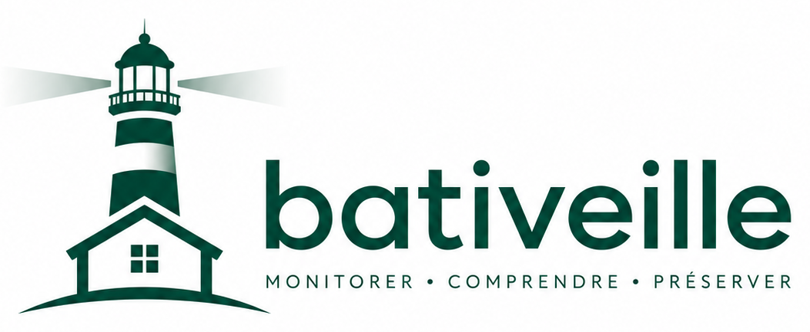

Veille documentaire et réglementaire du bâtiment
Nouveautés
Aucun contenu ne correspond aux filtres sélectionnés.
Mes favoris
Glisse une carte vers un dossier. Sur téléphone, utilise le sélecteur “Classer…”.

Aucun contenu ne correspond aux filtres sélectionnés.
Glisse une carte vers un dossier. Sur téléphone, utilise le sélecteur “Classer…”.
Identifiants incorrects.
Connecté : Admin